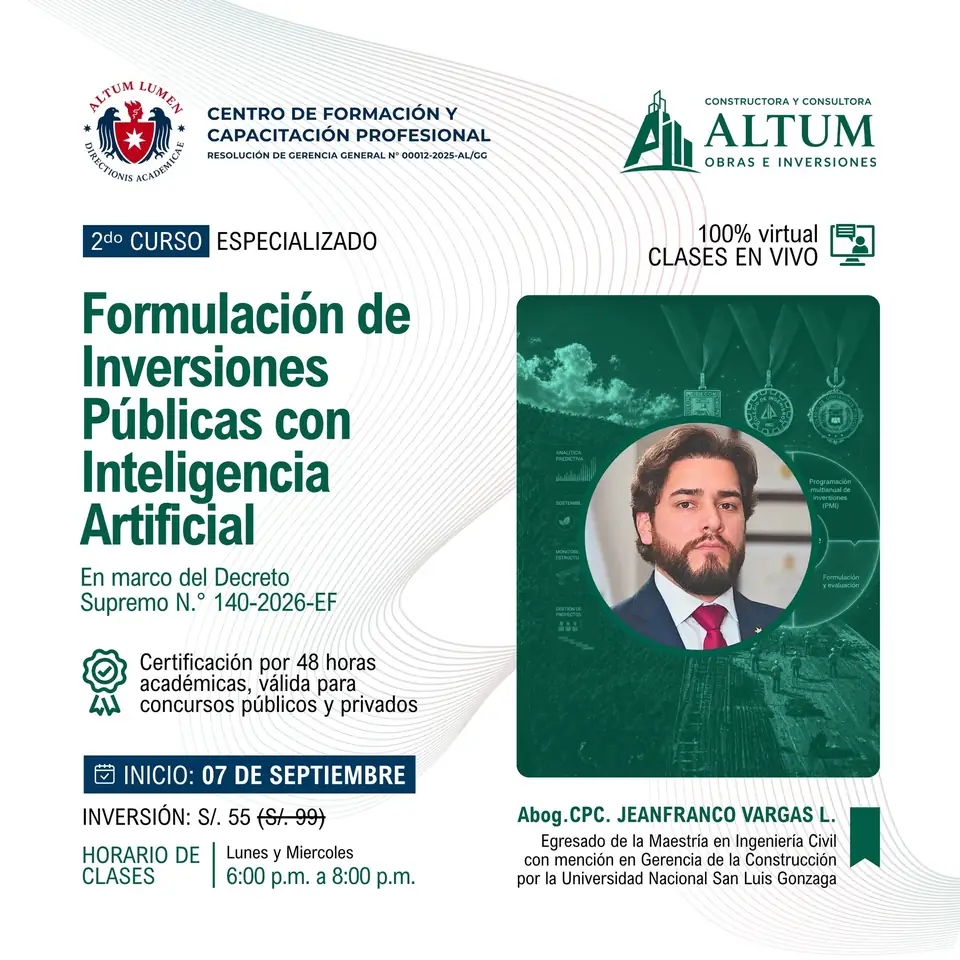

S01
Sesión 1 · Miércoles 9 de septiembre
Ya se encuentran disponibles la grabación de la primera sesión y el material académico correspondiente.

Formulación de inversiones públicas con apoyo de inteligencia artificial, en el marco del Decreto Supremo N.° 140-2026-EF.
La clase prevista para el lunes 7 de septiembre fue pospuesta y no se contabilizó como sesión. La Sesión 1 se desarrolló el miércoles 9 de septiembre; por la reprogramación se añadió una fecha y el curso culmina el lunes 21 de septiembre.
ID de reunión: 898 2548 8426 · Contraseña: 384686
La fecha del lunes 7 de septiembre fue pospuesta y no consumió una sesión. Los recursos se habilitan dentro de cada sesión efectiva.
Ya se encuentran disponibles la grabación de la primera sesión y el material académico correspondiente.
La grabación y el material académico se habilitarán en esta sección cuando sean publicados por la Dirección Académica.
La grabación y el material académico se habilitarán en esta sección cuando sean publicados por la Dirección Académica.
La cuarta sesión corresponde al cierre del curso. Su grabación y material académico se habilitarán cuando sean publicados por la Dirección Académica.